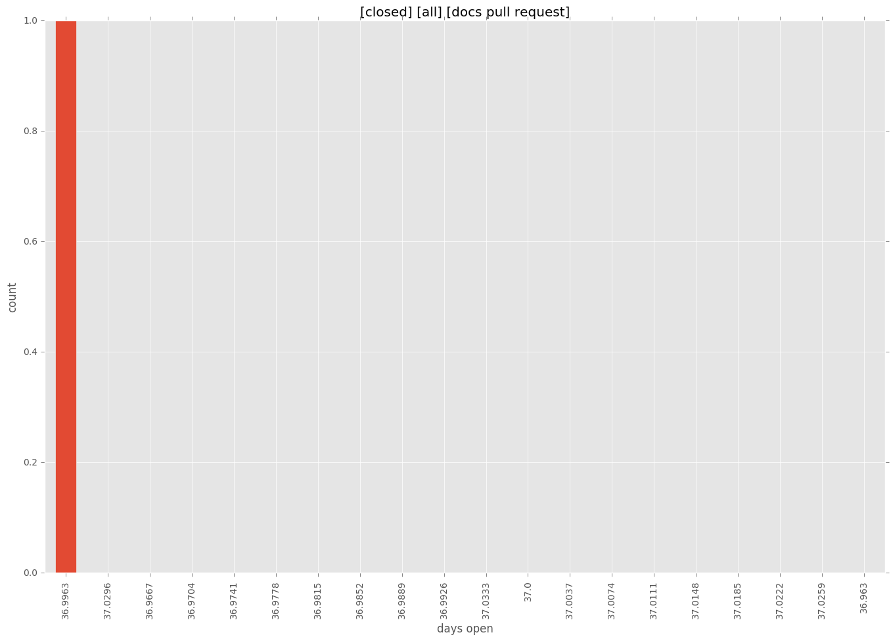
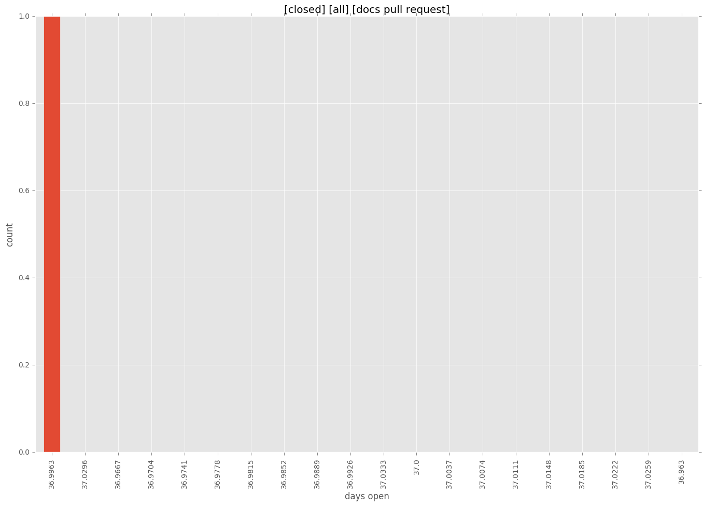

total issue counts
bugfix pull request: 6
feature pull request: 2
pullrequest: 9
docs pull request: 1
issue history
days open by issue type
bugfix pull request
count: 8
std: 4.56500664997
min: 0
max: 10
median: 0.0
mean: 2.625
feature pull request
count: 3
std: 6.35085296109
min: 8
max: 19
median: 19.0
mean: 15.3333333333
all
count: 12
std: 11.4996706145
min: 0
max: 37
median: 4.5
mean: 8.66666666667
pullrequest
count: 0
std: nan
min: nan
max: nan
median: nan
mean: nan
docs pull request
count: 1
std: nan
min: 37
max: 37
median: 37.0
mean: 37.0
closures grouped by total days open

 
